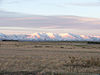

plain
phenomenon

Source: Wikipedia
Wikipedia Page (Something wrong with this association? Let us know.)
Wikidata Page (Something wrong with this association? Let us know.)
Occurs in:
- river-delta_plain~lower-and-plain~upper__area
- river-delta_plain~lower__area
- river-delta_plain~lower__mean_of_slope
- river-delta_plain~subaqueous__area
- river-delta_plain~subaqueous__mean_of_slope
- river-delta_plain_plain~subaqueous__area_ratio
- river-delta_plain__area
- river-delta_plain_boundary__diameter
- river-delta_plain_boundary__perimeter
- river-delta_plain~upper__area
- river-delta_plain~upper__mean_of_slope
- river-delta_plain~upper_boundary~seaward__length
- river-delta_plain~upper_vegetation__mean_of_height
- river-delta_plain~upper~farmed__area_fraction
- river-delta_plain~upper~residential__area_fraction
- river-delta_plain~upper~urban__area_fraction
- river-delta_plain~upper~vegetated__area_fraction